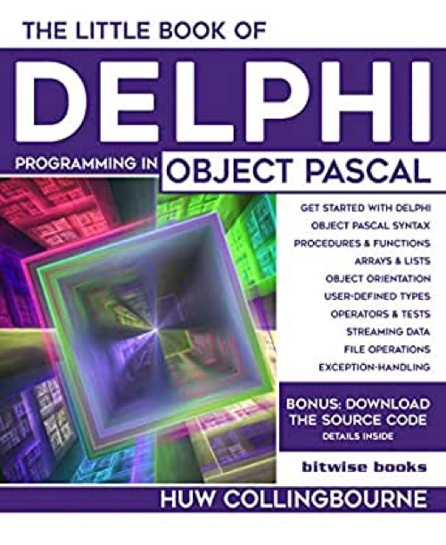

The little book of Delphi
Published by : Bitwise Books
Writed by : Huw Collingbourne
Published date : 24/02/2020
ISBN-10 : 1913132099
ISBN-13 : 9781913132095
Language :  English
English
Web site : http://bitwisebooks.com/books/little-book-of-delphi/
About The little book of Delphi
Learn to Program Delphi and Object Pascal quickly and easily.
Huw Collingbourne has programmed in Delphi for over 25 years. For over ten years he was the Delphi columnist for PC Plus Magazine in the UK. In this book, he explains how to design desktop applications and program in Delphi's Object Pascal language. All the source code is available for free download so you can get started with Delphi programming straight away.
This book explains...
Fundamentals of Delphi
The Object Pascal language
Object Orientation
Variables, Types, Constants
Operators and Tests
for loops and while loops
Procedures and Functions
Parameters and Arguments
Arrays and Lists
String Operations
Case Statements
User-defined Types
Constructors and Methods
Creating and Freeing Objects
Inheritance and Encapsulation
Virtual and Overridden Methods
File-handling
Text files and Binary files
Streaming and Serialization
Errors and Exceptions
...and much more
The Little Book Of Delphi takes you from the very basics of Object Pascal programming right through to complex topics such saving and loading networks of objects to and from disk’. All the source code is provided as a free download from the publisher's web site. The book explains everything you need to know to get started with productive Delphi development.
Huw Collingbourne has been a programmer for more than 30 years. He is an online programming instructor who has taught tens of thousands of students to code in languages such as C, C#, Java, Object Pascal and Ruby. He had written programming columns for numerous computer magazines such as PC Plus and Computer Shopper. He is Technical Director of the independent development company, SapphireSteel Software. He is the author of a number of programming books including The Book Of Ruby, The Little Book Of Pointers and The Little Book of Recursion.
The Little Book Of Delphi gives you just the stuff you really need to get straight to the heart of Object Pascal programming without all the fluff and padding.
Where to buy ?
This book has the ISBN13 "9781913132095".
If it is still available for sale, you can order it in your favorite bookstore, by its publisher or online at
Amazon CA,
Amazon FR,
Amazon JP,
Amazon UK or
Amazon USA depending on your country.
Table of content
Introduction
1 – Getting Started
2 – Fundamentals of Pascal
3 – Procedures and Functions
4 –Types and Operators
5 – Loops, Arrays and Strings
6 – User Defined Types and File IO
7 – Object Orientation
8 – Class Hierarchies
9 – Errors, Exceptions and Bugs
10 – The Adventure Continues
Appendix